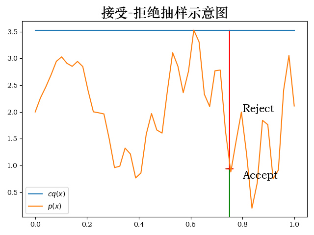
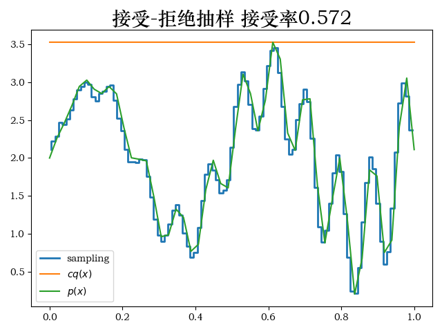

统计学习方法:马尔科夫链蒙特卡洛法
蒙特卡洛法是对概率模型进行抽样来近似数值计算的方法.马尔科夫链蒙特卡洛法就是以马尔科夫链作为概率模型的蒙特卡洛法.
我的理解是传统的蒙特卡洛法需要进行采样,但他的采样还是需要依赖于目标分布\(p(x)\),当目标分布\(p(x)\)是一个多元函数,或者概率密度函数是奇怪的分布,或者内部分量不独立时,总之就是难以直接采样时,引入一个满足遍历定理的马尔科夫链,让他的平稳分布就是目标分布\(p(x)\),接下来我们利用马尔科夫链生成许多样本,生成的样本数量越大,那么这些样本就接近于直接抽样的结果.解决了难以直接抽样的问题.
蒙特卡洛接受-拒绝法采样
原理书本上都有,我这里给出一个具体的例子:
from scipy import stats
import matplotlib.pyplot as plt
import numpy as np
from scipy.stats._discrete_distns import binom
from scipy.stats._continuous_distns import beta, norm
from scipy.stats._continuous_distns import uniform
plt.rcParams['font.sans-serif'] = ['STZhongsong'] # 用来正常显示中文标签
plt.rcParams['axes.unicode_minus'] = False # 用来正常显示负号
x = np.linspace(0, 1)
q_x = uniform
def p_x(x):
return x * np.cos(71 * x) + np.sin(13 * x) + 2
point = 0.75
c = np.max(p_x(x))
upper = c * q_x.pdf(point)
plt.plot(x, c * q_x.pdf(x), label='$cq(x)$')
plt.plot(x, p_x(x), label='$p(x)$')
plt.arrow(point, 0, 0, p_x(point), linewidth=1,
head_width=0.03, head_length=0.01, fc='g', ec='g')
plt.arrow(point, upper, 0, -(upper - p_x(point)), linewidth=1,
head_width=0.03, head_length=0.01, fc='r', ec='r')
plt.text(point + .05, 2., 'Reject', fontsize=16)
plt.text(point + .05, 0.75, 'Accept', fontsize=16)
plt.title('接受-拒绝抽样示意图', fontsize=20)
plt.legend()
plt.show()
n = 500000
sample_x = q_x.rvs(size=n)# 从均匀分布中采样x
u = uniform.rvs(size=n) # 这里采样u作为比例进行计算
v = sample_x[u <= (p_x(sample_x) / (c * q_x.pdf(sample_x)))] # v为接受的样本
hist, bin_edges = np.histogram(v, bins=100, normed=True)
factor = 2 # 这个参数本来应该是通过p(x)的cdf计算得到的,我这里偷懒了
bin_centers = (bin_edges[:-1] + bin_edges[1:]) / 2.
plt.step(bin_centers, hist * factor, linewidth=2, label='sampling')
plt.plot(x, c * q_x.pdf(x), label='$cq(x)$')
plt.plot(x, p_x(x), label='$p(x)$')
plt.legend()
plt.title(f'接受-拒绝抽样 接受率{np.size(v)/n:.3f}', fontsize=20)
plt.show()当我给定目标分布为\(p(x)=x\cos(71x)+\sin(13*x)+2\),建议分布为\(q(x)\sim U(0,1)\),\(c\)为目标分布大最大值,抽样的示意图如下所示:

根据书中的流程进行编码得到抽样结果如下,因为我这个目标分布是随便定义的,他的累积概率最终不为1,因此在绘制统计图的时候需要乘上一个系数.

马尔科夫链
之前隐马尔科夫模型其实已经讲到了,但是那边讲的并不详细.书本上在这一章详细介绍了马尔科夫链.我这里也给出一个简单的例子,假设我们有三个岛屿,岛屿上的人口初始分布不同,有一个转移矩阵表示了每年三个岛屿人口迁移概率,经过数年迭代之后到达平稳分布,中间的状态称为燃烧期: \[ T=\begin{bmatrix} 0.9& 0.05& 0.05\\ 0.1& 0.8& 0.1\\ 0.04& 0.01& 0.95 \end{bmatrix} \]
import matplotlib.pyplot as plt
import numpy as np
plt.rcParams['font.sans-serif'] = ['STZhongsong'] # 用来正常显示中文标签
plt.rcParams['axes.unicode_minus'] = False # 用来正常显示负号
A = np.array([
[0.9, 0.05, 0.05],
[0.1, 0.8, 0.1],
[0.04, 0.01, 0.95]
])
x = np.array([300000, 400000, 100000])
xs = [x]
for i in range(80):
xs.append(xs[i] @ A)
xs = np.array(xs)
plt.plot(xs[:, 0], label='A')
plt.plot(xs[:, 1], label='B')
plt.plot(xs[:, 2], label='C')
plt.legend()
plt.title('马尔科夫链转移示意图', fontsize=20)
plt.tight_layout(True)
plt.show()
Metropolis-Hastings采样
我这里给出一个典型的例子,就是使用Metropolis-Hastings采样方法从参数的先验分布与对应的似然分布得到数据的后验分布.即: \[ \begin{aligned} P(\theta|y)&\propto P(y|\theta)P(\theta)\\ \text{假设如下:}&\\ P(\theta)&=Be(\alpha,\beta)\\ P(y|\theta)&=Bin(n,k,\theta)\\ T&\sim N(0,\sigma) \end{aligned} \]
import matplotlib.pyplot as plt
import numpy as np
from scipy.stats import norm, binom, beta, uniform
plt.rcParams['font.sans-serif'] = ['STZhongsong'] # 用来正常显示中文标签
plt.rcParams['axes.unicode_minus'] = False # 用来正常显示负号
def target(like: binom, prior: beta, n, h, theta):
if theta < 0 or theta > 1:
return 0
else:
return like(n, theta).pmf(h) * prior.pdf(theta)
n = 100
h = 61
a = 10
b = 10
like = binom
prior = beta(a, b)
sigma = 0.3
naccept = 0
niters = 10000
thetas = np.zeros(niters + 1)
thetas[0] = 0.1 # 设定初始参数
for i in range(niters):
# 以当前状态下,转移矩阵为N(0,sigma)
theta_p = norm(thetas[i], sigma).rvs()
#
rho = min(1, target(like, prior, n, h, theta_p) /
target(like, prior, n, h, thetas[i]))
u = np.random.uniform()
if u < rho:
naccept += 1
thetas[i + 1] = theta_p
else:
thetas[i + 1] = thetas[i]
nmcmc = len(thetas) // 2 # 为了尽量选取平稳状态的采样值
x = np.linspace(0, 1, 200)
true_posterior = prior.pdf(x) * like(n, x).pmf(h) # 先验*似然
true_posterior /= (np.sum(true_posterior) / np.size(true_posterior))
plt.hist(thetas[nmcmc:], 80, density=True, label='posterior')
plt.hist(prior.rvs(nmcmc), 80, density=True, label='prior')
plt.plot(x, true_posterior, label='true posterior', c='red')
plt.legend()
plt.title(f"采样效率 = {naccept / niters:.3f}", fontsize=20)
plt.tight_layout(True)
plt.show()
""" 收敛状态评估 """
def mh_coin(niters, init_theta):
thetas = np.zeros(niters + 1)
thetas[0] = init_theta # 设定初始参数
for i in range(niters):
# 以当前状态下,转移矩阵为N(0,sigma)
theta_p = norm(thetas[i], sigma).rvs()
#
rho = min(1, target(like, prior, n, h, theta_p) /
target(like, prior, n, h, thetas[i]))
u = np.random.uniform()
if u < rho:
thetas[i + 1] = theta_p
else:
thetas[i + 1] = thetas[i]
return thetas
thetass = [mh_coin(100, i) for i in np.arange(0.1, 1.1, 0.2)]
for thetas, init in zip(thetass, np.arange(0.1, 1.1, 0.2)):
plt.plot(thetas, '-', label=f'init={init:.1f}')
plt.legend()
plt.title(f"马尔科夫链收敛状态评估", fontsize=20)
plt.tight_layout(True)
plt.show()经过采样后我们统计采样结果的分布,可以发现和后验概率分布相同.不过可以看到他的接受率并不高.

同时重复以上过程,我们可以发现进入马尔科夫链进入平稳分布的速度还是比较快的.

Gibbs采样
这里我暂时没想明白,如果说依次更新参数,当如果两个参数是独立的时候..
from mpl_toolkits.mplot3d import Axes3D
import matplotlib.pyplot as plt
import numpy as np
from scipy.stats import norm, binom, beta, uniform, bernoulli, gaussian_kde, multivariate_normal
from toolz import partial
plt.rcParams['font.sans-serif'] = ['STZhongsong'] # 用来正常显示中文标签
plt.rcParams['axes.unicode_minus'] = False # 用来正常显示负号
def binom2(p1, p2, k1, k2, N1, N2):
""" 二维伯努利分布 """
return binom.pmf(k1, N1, p1) * binom.pmf(k2, N2, p2)
def make_thetas(xmin, xmax, n):
xs = np.linspace(xmin, xmax, n)
widths = (xs[1:] - xs[:-1]) / 2.0
thetas = xs[:-1] + widths
return thetas
def make_plots(X, Y, prior, likelihood, posterior, projection=None):
fig, ax = plt.subplots(1, 3, subplot_kw=dict(
projection=projection), figsize=(12, 3))
if projection == '3d':
ax[0].plot_surface(X, Y, prior, alpha=0.3, cmap=plt.cm.jet)
ax[1].plot_surface(X, Y, likelihood, alpha=0.3, cmap=plt.cm.jet)
ax[2].plot_surface(X, Y, posterior, alpha=0.3, cmap=plt.cm.jet)
for ax_ in ax:
ax_._axis3don = False
else:
ax[0].contour(X, Y, prior, cmap=plt.cm.jet)
ax[1].contour(X, Y, likelihood, cmap=plt.cm.jet)
ax[2].contour(X, Y, posterior, cmap=plt.cm.jet)
ax[0].set_title('Prior')
ax[1].set_title('Likelihood')
ax[2].set_title('Posteior')
thetas1 = make_thetas(0, 1, 101)
thetas2 = make_thetas(0, 1, 101)
X, Y = np.meshgrid(thetas1, thetas2)
""" 先验分布参数 """
a = 2
b = 3
""" 似然分布参数 """
k1 = 11
N1 = 14
k2 = 7
N2 = 14
prior = beta(a, b).pdf(X) * beta(a, b).pdf(Y)
likelihood = binom2(X, Y, k1, k2, N1, N2)
posterior = beta(a + k1, b + N1 - k1).pdf(X) * beta(a + k2, b + N2 - k2).pdf(Y)
make_plots(X, Y, prior, likelihood, posterior)
plt.title(f"原始分布", fontsize=20)
plt.tight_layout(True)
plt.show()
""" M-H采样 """
def prior(theta1, theta2): return beta(a, b).pdf(theta1) * beta(a, b).pdf(theta2)
lik = partial(binom2, k1=k1, k2=k2, N1=N1, N2=N2)
def target(theta1, theta2): return prior(theta1, theta2) * lik(theta1, theta2)
sigma = np.diag([0.2, 0.2])
def proposal(theta): return multivariate_normal(theta, sigma).rvs()
def metro_hastings(niters: int, burnin: int,
theta: np.ndarray, proposal: callable,
target: callable):
thetas = np.zeros((niters - burnin, 2), np.float)
for i in range(niters):
new_theta = proposal(theta)
p = min(target(*new_theta) / target(*theta), 1)
if np.random.rand() < p:
theta = new_theta
if i >= burnin:
thetas[i - burnin] = theta
return thetas
init_theta = np.array([0.5, 0.5])
niters = 10000
burnin = 500
thetas = metro_hastings(niters, burnin, init_theta, proposal, target)
kde = gaussian_kde(thetas.T)
XY = np.vstack([X.ravel(), Y.ravel()])
posterior_metroplis = kde(XY).reshape(X.shape)
make_plots(X, Y, prior(X, Y), lik(X, Y), posterior_metroplis)
plt.title(f"M-H采样", fontsize=20)
plt.tight_layout(True)
plt.show()
""" gibbs """
theta = np.array([0.5, 0.5])
niters = 10000
burnin = 500
def gibbs(niters: int, burnin: int,
theta: np.ndarray, proposal: callable,
target: callable):
thetas = np.zeros((niters - burnin, 2), np.float)
for i in range(niters):
theta = [beta(a + k1, b + N1 - k1).rvs(), theta[1]]
theta = [theta[0], beta(a + k2, b + N2 - k2).rvs()]
if i >= burnin:
thetas[i - burnin] = theta
return thetas
thetas = gibbs(niters, burnin, init_theta, proposal, target)
kde = gaussian_kde(thetas.T)
XY = np.vstack([X.ravel(), Y.ravel()])
posterior_metroplis = kde(XY).reshape(X.shape)
make_plots(X, Y, prior(X, Y), lik(X, Y), posterior_metroplis)
plt.title(f"Gibbs采样", fontsize=20)
plt.tight_layout(True)
plt.show()运行结果: